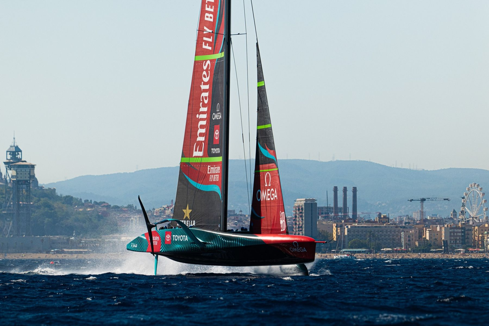
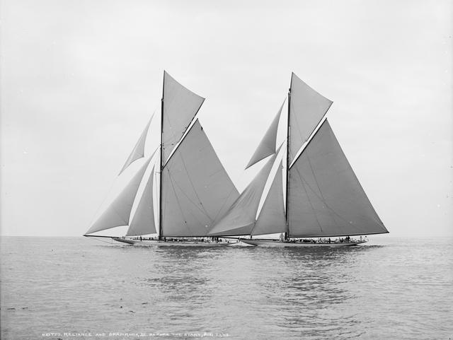
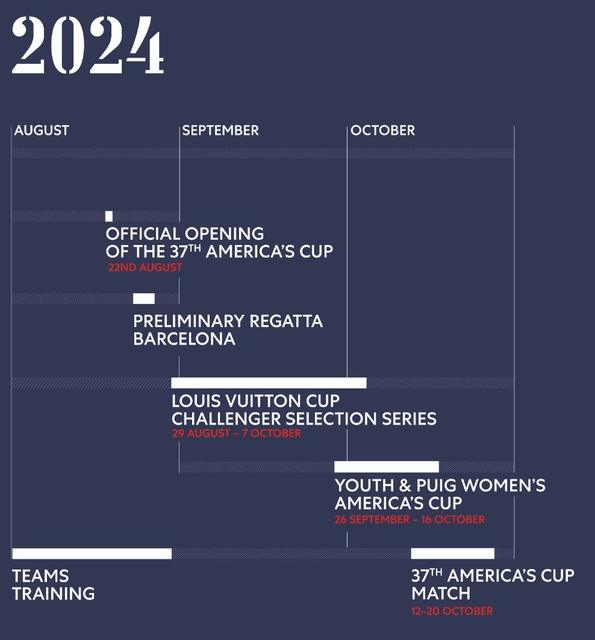

8 januari 2024
America's Cup
Maak jullie geen zorgen, deze post dient niet om aan te kondigen dat ik deze keer beslist heb om aan deze wedstrijd deel te nemen als de enige Belgische inzending. De meesten kennen het event waarschijnlijk, het is samen met de (ex-) Volvo Ocean race de bekendste zeilwedstrijd. Bovendien de oudste sporttrofee ter wereld, die net zoals een Olympische medaille maar om de 4 jaar gewonnen kan worden.

Deze wedstrijden vinden bijna altijd in de US of Australië/Nieuw Zeeland plaats, want dat zijn de enige landen die de trofee ooit gewonnen hebben en de winnaars mogen kiezen waar ze hun titel verdedigen.
Maar voor de huidige editie, die in 2023-2024 uitgevochten wordt, heeft Nieuw-Zeeland, de winnaar van de vorige editie, Barcelona gekozen als locatie. En de finale vindt plaats van augustus tot oktober dit jaar. De boten waarmee deze keer gestreden wordt zijn iets minder mooi, om niet te zeggen lelijk, maar ze gaan oerend hard.

Jullie horen me waarschijnlijk al komen: het zou zonde zijn om de kans deze beesten live in actie te zien te missen. Wie een city trip aan het prachtige Barcelona wil combineren met wat high-adrenaline match-racing, mag het altijd laten weten en wie weet kunnen we samen gaan. We zijn dan toch "in de buurt", enfin min of meer. Voor alle gemak, het schema hieronder, dit is ook te vinden op https://www.americascup.com/home.

YOLO etc 😁😉